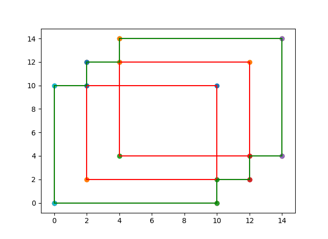

Input 3
3
0 0
10 10
2 2
12 12
4 4
14 14
Output 3
Measure = 172
Number of Contour Lines = 12
Contour Line Segments:-
0 0 10 0
10 2 12 2
12 4 14 4
0 10 2 10
2 12 4 12
4 14 14 14
0 0 0 10
2 10 2 12
4 12 4 14
10 0 10 2
12 2 12 4
14 4 14 14
Contour Length = 56
